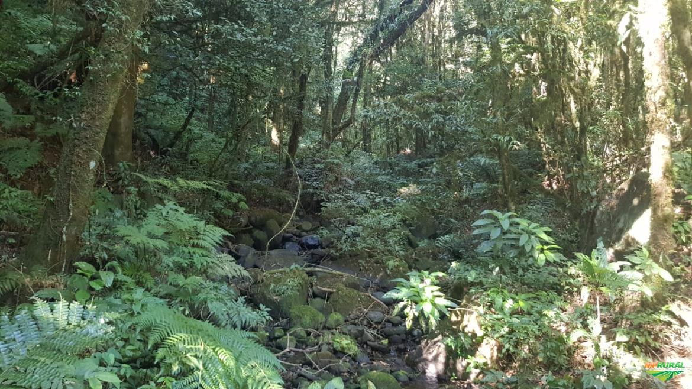
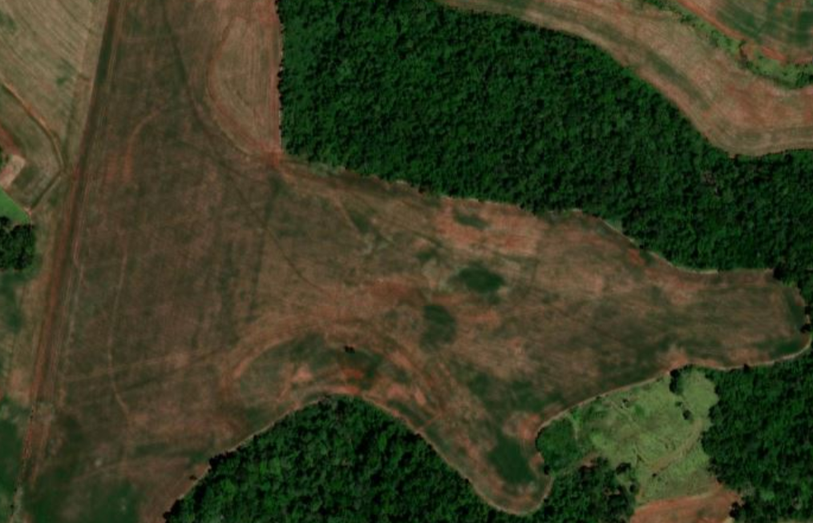

Viva as maravilhas da vida!
Paisagens, um pouco da vila rural e tudo de bom que morar na vila pode nos proporcionar!
Rios e riachos

Na linha Três Ângicos, ou próxima a ela, tem rios e riachos, tal como o rio Santo Antônio e a sanga Três angicos.
Florestas naturais

Por ser uma comunidade rural e pouco urbanizada, há várias florestas e matas verdeslindas e bem conservadas.
Campos e Lavouras

São vários também, os campos e lavouras, graças aos produtores rurais com sua lavouras ou seus campos de pastagem.